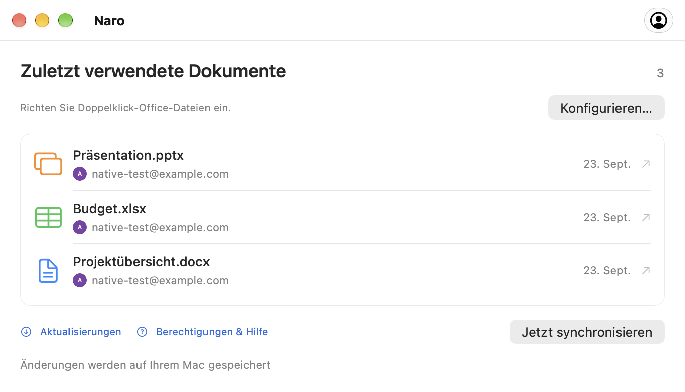

Verbinden Sie Ihr Google-Konto.
Melden Sie sich über Ihren Browser an und legen Sie dann in den Kontoeinstellungen Naro als Standard-App für Ihre Office-Dateien fest.
Office-Dateien, verbunden unter macOS
Naro ist eine macOS-App, die Ihre Word-, Excel- und PowerPoint-Dateien in Google Docs, Sheets und Slides öffnet und dann gespeicherte Änderungen wieder mit Ihrem Mac synchronisiert, während die App ausgeführt und online ist.
Verfügbar für Apple Silicon · macOS 26 oder neuer
Weniger Aufwand. Einfach arbeiten.
Ihre letzten Dateien. Ihre Google-Konten. Ein vertrauter Ort, an dem Sie dort weitermachen können, wo Sie aufgehört haben.
Ein genauerer Blick
Ein vertrauter Anfang
Ihr üblicher Doppelklick, mit den Google-Editoren auf der anderen Seite.
Melden Sie sich über Ihren Browser an und legen Sie dann in den Kontoeinstellungen Naro als Standard-App für Ihre Office-Dateien fest.
Naro lädt die Datei auf Ihr Google Drive hoch und öffnet den passenden Editor. Wählen Sie bei mehreren Konten zunächst einen Avatar aus.
Während Naro läuft und online ist, überprüft es die von Google gespeicherten Änderungen, schreibt sie lokal zurück und erstellt ein Backup.
Drei Herausgeber. Eine App.
Dokumente, Tabellenkalkulationen und Präsentationen. Bis zu 100 MB pro Datei.

Von einem lokalen Dokument zu Google Docs.
DOC · DOCX
Öffnen Sie Ihre Tabellen in Google Sheets.
XLS · XLSX
Übernehmen Sie Ihre Präsentationen in Google Slides.
PPT · PPTXVerbinden Sie das Google-Konto, das Sie für Ihre Dokumente verwenden möchten. Naro verwendet Ihren Namen, Ihre E-Mail-Adresse und Ihr Profilbild, um verbundene Konten anzuzeigen und Ihnen bei der Auswahl des richtigen Kontos zu helfen. Naro erhält niemals Ihr Google-Passwort.
Wenn Sie eine lokale Office-Datei mit Naro öffnen, lädt es diese Datei auf Ihr Google Drive hoch und öffnet den Google-Editor in Ihrem Browser. Durch den Laufwerkszugriff kann Naro gespeicherte Änderungen abrufen und sie wieder mit Ihrem Mac synchronisieren. Der Zugriff ist auf Dateien beschränkt, die von Naro erstellt oder explizit mit ihm geteilt wurden, nicht auf Ihr gesamtes Laufwerk.
Dokumente werden direkt zwischen Ihrem Mac und Google übertragen. Naro verfügt über keinen vom Entwickler betriebenen Server, der Ihre Dokumente empfängt. Anmeldetokens bleiben im macOS-Schlüsselbund.
Hilfe für unterwegs
Kurzanleitungen für Ihre erste Datei,
Ihr nächstes Konto und alles synchron.
Erste Schritte
Verbinden Sie Google, richten Sie das Öffnen über den Finder ein und übertragen Sie Ihr erstes Dokument in den Browser.
Google-Konten
Fügen Sie ein weiteres Konto hinzu und wählen Sie mit der kompakten Avatar-Auswahl von Naro aus, wohin jedes Dokument verschoben werden soll.
Speichern & Synchronisieren
Erfahren Sie mehr über lokales Speichern, Backups und was zu tun ist, wenn sich eine Datei an zwei Stellen ändert.
Gut zu wissen
Ja. Laden Sie Naro von GitHub Releases herunteroder mit Homebrew installieren:
brew install --cask plexideas/tap/naro. Der Download hat keine Apple Developer ID-Signatur, daher kann es sein, dass macOS Sie dazu auffordert, den ersten Start explizit zuzulassen.
Die Bearbeitung erfolgt in Google Docs, Sheets oder Slides in Ihrem Browser. Naro kümmert sich um das Öffnen von Dateien aus dem Finder, die Auswahl eines Kontos und das Zurückbringen der von Google gespeicherten Änderungen auf Ihren Mac.
Naro behält beide Versionen und fragt, mit welcher er fortfahren soll. Außerdem werden lokale Sicherungen erstellt, bevor ein Dokument ersetzt wird. Lassen Sie Naro zur Synchronisierung laufen und mit dem Internet verbunden.
Die Kompatibilität hängt von den Office-Editoren von Google ab. Komplexe Formatierungen, Makros und andere erweiterte Funktionen bleiben möglicherweise nicht erhalten. Wenn Google eine ältere DOC-, XLS- oder PPT-Datei aktualisiert, speichert Naro neben dem Original eine Kopie im modernen Format. Das Konvertieren einer Datei in ein separates Google-natives Dokument wird nicht über den ursprünglichen Dateilink nachverfolgt.
Naro unterstützt Apple Silicon Macs mit macOS 26 oder neuer. Die App kann GitHub-Releases auf Updates prüfen. Sie entscheiden im Update-Fenster, wann Sie das Update herunterladen, installieren und neu starten möchten.